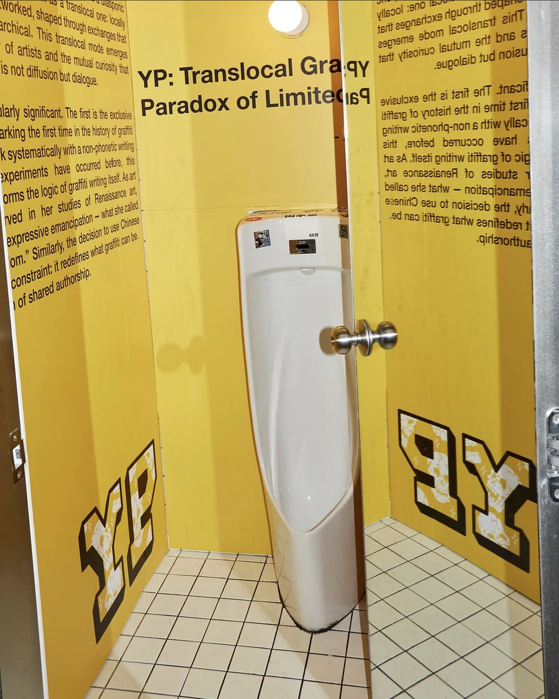

Exhibitions
Curating, exhibition texts and advice on public and street art. This is the practical side of the research: how creative work in public space is shown, protected and managed.
Curated exhibitions · Exhibition texts · Gallery · Advisory work
Curated exhibitions
Wild Traces: Graffiti Art Invitational Exhibition K-Gallery, Chengdu, China. 16 May – 12 July 2026.
六/6: Finding Meaning Digital exhibition, co-curated with Pietro Rivasi. 2020–present.
Filippo Cardella: Uno di voi mi tradirà NJU Fine Art Museum, Nanjing, China. 25 June – 5 July 2019.
Francesco Barbieri: Identità Riflessa: Dopo Nanjing Galleria la Linea, Siena, Italy. 14 May 2016.
Colorful Tuscany: An Invited Exhibition of Italian Artists Sifang Art Museum, Nanjing, China. 23 October – 1 November 2015.
Exhibition texts

“Translocal Graffiti and the Paradox of Limited Freedom” Essay for the exhibition YP & Friends, printed on the walls of the show’s restroom.
“Metropoli: Ritratti d’emozioni e memorie” (2017). Introductory essay for Francesco Barbieri’s exhibition The Imagined Industrial City.
“Polvere e muri” (2017). Introductory essay for Stefano Divizia’s exhibition Walls.
“Luci a Oriente” (2016). Introductory essay for the exhibition Experiences of China.
“Pisa–Nanjing: A Full Circle” (2016). Introductory essay for Francesco Barbieri’s exhibition Identità Riflessa: Dopo Nanjing.
“Under Art Construction” (2015). Introductory essay for the catalogue of Naxoshalle Atelier’s project Under Art Construction.
“New Ways of Seeing” (November 2015, with Xian Zhou). Introductory essay for the exhibition New Ways of Seeing.
“Through the Looking Glass: Another Day in Tuscany” (November 2015). Introductory essay for the exhibition of the same name.
“Introduction” (October 2015, with Xian Zhou and others). Introductory essay for the exhibition Colorful Tuscany.
Gallery
The Chinese Room Contemporary art gallery, Shanghai and Nanjing, China. Founder and director, 2019–2022.
Advisory work
Public art and street art consultant to:
Le Grand Jeu (Paris) · Naxoshalle Atelier (Frankfurt, a municipally-owned cultural and social centre) · CCN Massa da Vivere (Massa) · City Council of Turin · Officine Corsare (Turin) · Patchanka Cultural Association (Chieri) · Il Cerchio e le Gocce Cultural Association (Turin) · City Council of Massa